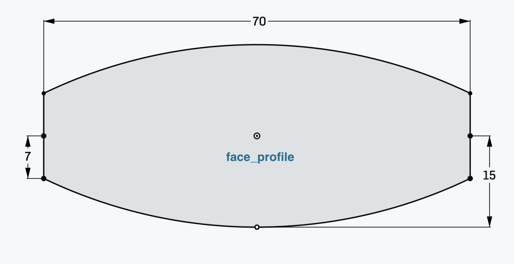

Bottle
This is reimplementation of the Bottle tutorial from OpenCasdade reference manual. The python version of the same tutorial using pythonocc-core for your reference.
In this tutorial, we will build a model of this bottle:
We first define some parameters:
HEIGHT = 50 WIDTH = 70 THICKNESS = 30
To build the body, we will need to define the bottom face first.
The following code will create three
edges- two straight and one curved side.pt1 = Point(-WIDTH / 2., 0, 0) pt2 = Point(-WIDTH / 2., -THICKNESS / 4., 0) pt3 = Point(0, -THICKNESS / 2., 0) pt4 = Point(WIDTH / 2., -THICKNESS / 4., 0) pt5 = Point(WIDTH / 2., 0, 0) arc = ArcOfCircle(pt2, pt3, pt4) segment1 = Line(pt1, pt2) segment2 = Line(pt4, pt5)
Now, we connect the edges into a
wire, so we can work with it as with a single piece of geometry.wire = Wire([edge1, edge2, edge3])
Next, we mirror the wire by the x-axis. To do that, we create an
x_axisvariable that will represent the x-axis. Then, we callmirrormethod on the wire to get themirrored_wire.x_axis = Geometry.OX() mirrored_wire = wire.mirror(x_axis)
To build the bottom face, we join the 2 wires into a one.
wire_profile = Wire([wire, mirrored_wire])
And then, we build a
facefrom the wire.face_profile = Face(wire_profile)
Now that we have the face, we can extrude it using the
extrudemethod. We will need avectorto define the direction of extrusion.prism_vec = Vector(0, 0, HEIGHT) body = face_profile.extrude(prism_vec)
In the next step, we will apply a
filletto get the rounded edges. To do that we get all the edged viaedgesmethod. And then, we call thefilletmethod with the list of edges and the radius of the fillet.edges = body.edges() body = body.fillet(edges, THICKNESS / 12.0)
In this next step, we build the neck of the bottle. We do that by creating a cylinder that will sit on top of the body.
neck_location = Point(0, 0, HEIGHT) neck_axis = Geometry.DZ() neck_ax2 = Axis2(neck_location, neck_axis) neck_radius = THICKNESS / 4. neck_height = HEIGHT / 10 neck = Cylinder(neck_ax2, neck_radius, neck_height)
Then, we simply join the neck with the body using the
fuse()method.body = body.fuse(neck)
In the last step, we hollow out the body.
For that, we will need to find the top face of the neck. This face will be removed to create the top opening. We can achieve this with the following simple code:
z_max = -1. top_face = None for face in body.faces(): if face.is_plane(): plane = face.plane() if plane.location.z > z_max: z_max = plane.location.z top_face = face
To hollow out the body we call the
hollowmethod with the faces we want to remove, thickness and tolerance.body = body.hollow([top_face], -THICKNESS / 50, 1e-3)

This last segment is specific to
figuraand is not part of the original tutorial. This is the way how we tell the code which shapes should be exported into the output file.export = [body]
The complete script is:
from figura import *
HEIGHT = 50
WIDTH = 70
THICKNESS = 30
pt1 = Point(-WIDTH / 2., 0, 0)
pt2 = Point(-WIDTH / 2., -THICKNESS / 4., 0)
pt3 = Point(0, -THICKNESS / 2., 0)
pt4 = Point(WIDTH / 2., -THICKNESS / 4., 0)
pt5 = Point(WIDTH / 2., 0, 0)
arc = ArcOfCircle(pt2, pt3, pt4)
segment1 = Line(pt1, pt2)
segment2 = Line(pt4, pt5)
wire = Wire([segment1, arc, segment2])
x_axis = Geometry.OX()
mirrored_wire = wire.mirror(x_axis)
wire_profile = Wire([wire, mirrored_wire])
face_profile = Face(wire_profile)
prism_vec = Vector(0, 0, HEIGHT)
body = face_profile.extrude(prism_vec)
edges = body.edges()
body = body.fillet(edges, THICKNESS / 12.0)
neck_location = Point(0, 0, HEIGHT)
neck_axis = Geometry.DZ()
neck_ax2 = Axis2(neck_location, neck_axis)
neck_radius = THICKNESS / 4.
neck_height = HEIGHT / 10
neck = Cylinder(neck_ax2, neck_radius, neck_height)
body = fuse(body, neck)
z_max = -1.
top_face = None
for face in body.faces():
if face.is_plane():
plane = face.plane()
if plane.location.z > z_max:
z_max = plane.location.z
top_face = face
body = body.hollow([top_face], -THICKNESS / 50, 1e-3)
export = [body]